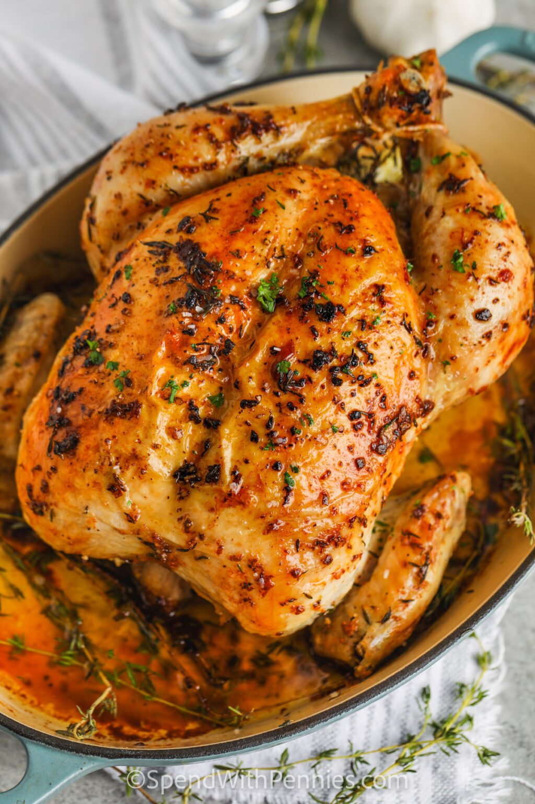

Roast Garlic Chicken Breast Recipe

Description
The Roasted Garlic Butter Chciken recipe has existed since the dawn of chickens, and exists as a tantalizing exhibition of the human culinary cultural experience.
Ingredients
- Chicken Breast
- Salt and Pepper
- 1 teaspoon Italian Seasoning
- 1 Tablespoon Parsley
- 2 Clove Garlic minced
- 1 Tbsp Olive Oil
- Paprika
Steps
- Preheat oven to 400°F. Season chicken breast with salt, pepper, 1/2 teaspoon of paprika and set aside.
- In a small bowl mix together 1/4 teaspoon of paprika, butter, Italian seasoning, parsley, and garlic. Set aside.
- In a Blue Diamon Pan, heat olive oil over medium heat. When the skillet is really hot add chicken breast. Sear until golden. It’s about 1-2 minutes each side.
- Pour garlic butter mixture over the chicken breast. Place skillet in the oven and cook until cooked through. It’s about 20-30 minutes or until chicken breasts gets to an internal temperature of 165F.
- Remove from the oven. Using a spoon, pour some of the butter sauce left in the skillet onto the chicken breast before serving.